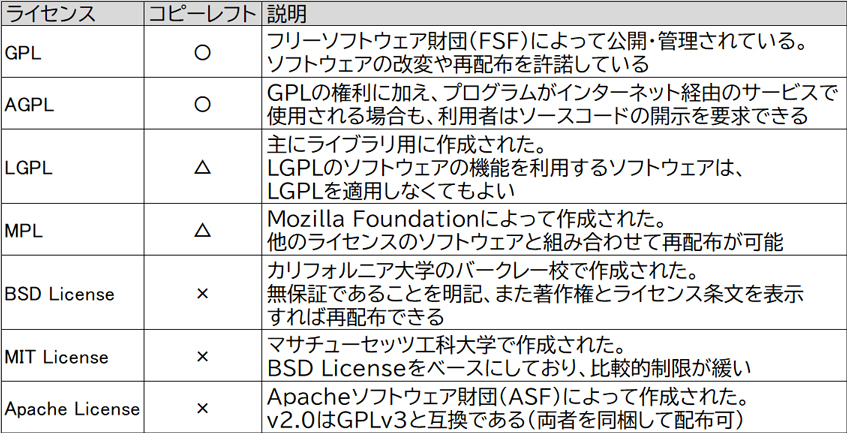
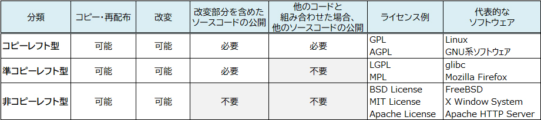

- 問題ID : 15827 オープンソースの概念とライセンス
- 履歴
正解
Apache License
解説
Apache LicenseはApacheソフトウェア財団（ASF）によって作成された、BSD系のライセンスです。
Apache License 2.0にはGPLv3と同じく特許の停止条件が入っているため、両者は互換性があるとされています。
したがって正解は
・Apache License
です。
その他の選択肢については下表をご確認ください。

参考
【オープンソース】
Linuxはオープンソースソフトウェア（Open Source Software）として幅広く利用されているソフトウェアの一つです。
オープンソースとは、プログラムのソースコードを公開し、誰でも自由にソフトウェアの改良や再配布（再頒布）をすることができるという考え方です。
非営利組織のOSI(Open Source Initiative)は、オープンソースを以下のように定義しています。
1. 再配布が自由であること
2. ソースコードを入手できること
3. ソフトウェアの改変や派生物の作成ができ、元と同じライセンスを適用できること
4. 差分の配布と適用を許可する場合においては、ソースコードの改変を制限できる（著作物の完全性の維持）
5. 利用する個人やグループを差別しないこと
6. 利用する分野を差別しないこと
7. ライセンスの権利は再配布された全ての人に適用され、追加のライセンス契約を必要としないこと
8. ライセンスの権利は特定の製品の一部として限定されないこと
9. 共に配布される他のソフトウェアを制限しないこと
10.技術的に中立であること
ソ
フトウェアにおけるライセンスとは、ソフトウェアの利用者が遵守するべき事項（およびその文書）のことをいいます。上記の条件を満たすライセンス（オープ
ンソースライセンス）には様々な種類があり、オープンソースライセンスを持つソフトウェアがオープンソースソフトウェア（OSS）です。
OSSには下記の特徴があります。
・著作権の表示
OSSは著作物であり、派生物（著作物を改変したもの）にも適切な形で著作権の表示を保持するように定められています。
・無保証であること
著作者はソフトウェアの動作について保証しません。
・開発、メンテナンスの継続
企業が開発する商用ソフトウェアはサービスやサポートが終了になると開発は続けられませんが、OSSは利用者や開発者のコミュニティがメンテナンスをすることで、修正や新機能の開発を継続することができます。
オー
プンソースソフトウェアに対して、プログラムやソースコードの利用に際して、秘密保持契約の締結や利用料の支払いが必要などの制限がかけられているものを
「プロプライエタリ（私有の）ソフトウェア」といいます。Microsoft WindowsやOracle Databaseなどがこれにあたります。
●コピーレフト
著
作権に対する考え方で「コピーレフト（copyleft）」という概念があります。フリーソフトウェア財団（FSF: Free Software
Foundation）の創設者リチャード・ストールマンによって掲げられました。FSFはコンピュータソフトウェアのフリー（自由）な利用・配布・開発
を推進する団体で、コピーレフトもその考え方を持っています。
・著作物の利用やコピー・再配布、改変を制限しない
・派生物（著作物を改変したもの）についても利用やコピー・再配布、改変を制限しない
・コピー・再配布の際はソースコードなど全ての情報を入手可能とする
・同じライセンスを著作物および派生物にも適用し、明記する
つまりコピーレフト（copyleft）とは、著作権（copyright）の基本的な考え方『この著作物は会社/個人に帰属するので他者の勝手な利用や模倣を禁ずる』とは対照的な考え方をいいます。
一度コピーレフト型のライセンスを用いたソフトウェアを利用すると、その後の派生物はすべて同じライセンスを適用しなくてはなりません。このコピーレフトの考え方に対して、派生物に対して許容的な「非コピーレフト型」のライセンスも存在します。
数あるオープンソースライセンスはコピーレフトの適用によって次のように分けられます。

●オープンソースライセンス
代表的なオープンソースライセンスは以下のとおりです。
・GPL（GNU General Public License）
GPL はFSFによって管理・運用されており、その根底にはコピーレフト（前述）を尊重する精神があります。GPLのコードを改変等した場合の派生物や、ソフト ウェアの一部にGPLを持つソースコードを使用した場合でも、GPLは適用され続けなければなりません。つまり、「プログラムの利用・改変・改良・再配布 を許諾」する必要があります。また、GPLで配布するソフトウェア（派生物含む）は、ソースコードを要求された場合には提供しなければならないなどの条件 があります。
GPLのコードを使用して作成したプログラムで特許を取得した場合、GPLに従ってそのソースコードも公開しなければなりませんが、 GPLv2では特許権は保持されます。つまり、発明者はコードを利用した相手に対して使用料を請求したり訴えることができるため、特許が含まれるコードは 公開されていても実質自由に使えないということになります。最新バージョンのGPLv3では、発明者は公開したコードを利用した相手を訴えることができな くなっています。
なお、LinuxはGPLv2を採用しています。
・AGPL（GNU Affero GPL）
GPLのプログラムを改変しても、ASP（Application Service Provider）のようにインターネット経由でサービスとして提供している場合はソースコードの開示を要求できません。
AGPLは、ネットワーク越しのソフトウェアの利用でも、利用者はソースコードの開示を要求できる点が異なります。
・LGPL（GNU Lesser GPL）
主にライブラリ用に作成されました。
LGPLのソフトウェアの機能を利用するソフトウェアは、LGPLを適用しなくても構いません。
例えば、LGPLのバイナリを動的リンクとして呼び出すソフトウェアにはLGPLの権利は及びません。LGPLのコードをソフトウェアに組み込んだ場合は、LGPLが適用され、ソースコードの開示が必要となります。
・MPL（Mozilla Public License）
Mozilla Foundationによって作成されました。
MPL のソフトウェア自体はソースコードを付けて再配布する必要がありますが、他のライセンスのソフトウェアやプロプライエタリなソフトウェアと組み合わせて配 布することができます。つまり、プロプライエタリなモジュールはそのままに、MPLのソフトウェアはオープンソースを維持できます。
・BSD License
BSD（Berkeley Software Distribution）ライセンスはカリフォルニア大学によって作成されました。カリフォルニア大学のバークレー校が開発したOSやソフトウェア群に対して採用されています。
無保証であることを明記、また著作権とライセンス条文を表示すれば再配布できます。派生物へのライセンス適用は不要です。
・MIT License
MIT（Massachusetts Institute of Technology：マサチューセッツ工科大学）で作成された、BSD系のライセンスです。GPLと比べて規制が少なく、利用者が非常に多いことで有名です。
・Apache License
Apacheソフトウェア財団（ASF）によって作成された、BSD系のライセンスです。
Apache License 2.0にはGPLv3と同じく特許の停止条件が入っているため、両者は互換性があるとされています。
なお、著作物に対して著作権や特許権などの知的財産権が発生していない状態、または失効した状態のことを「パブリックドメイン（公有）」といいます。
【フリーソフトウェア】
フリーソフトウェアとは、ソフトウェアの利用・改変・配布などが自由に行えるソフトウェアのことです。フリーソフトウェアの「フリー」は「自由な」という意味で、無料のソフトウェアということではありません。
無償のソフトウェアは「フリーウェア」、有償のソフトウェアは「シェアウェア」です。
【FOSS/FLOSS】
「FOSS（Free/Open Source Software）」や「FLOSS（Free/Libre and Open Source Software）」は、自由にソースコードの入手、改変が行えるソフトウェアを総称したものです。
オープンソースソフトウェア、フリーソフトウェアはFOSS、FLOSSに該当します。